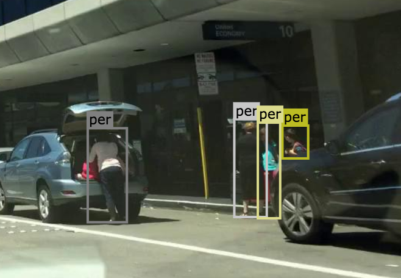

Instructions
Bounding Box Annotation Technical Standard
Your Mission
Your mission is to annotate bounding boxes around the following 10 objects as well their attributes (e.g. occluded, truncated, color of the traffic light) :
Label Categories
Person
A human that satisfies the following criterion. Assume the human moved a distance of 1m and stopped again. If the human would walk, the label is person, otherwise not. Examples are people walking, standing or sitting on the ground, on a bench, on a chair. This class also includes toddlers, someone pushing a bicycle or standing next to it with both legs on the same side of the bicycle. This class includes anything that is carried by the person, e.g. backpack, but not items touching the ground, e.g. trolleys.
Rider
A human that would use some device to move a distance of 1m. Includes, riders/drivers of bicycle, motorbike, scooter, skateboards, horses, roller-blades, wheel-chairs, road cleaning cars, cars without roof. Note that a visible driver of a car with roof can only be seen through the window. Since holes are not labeled, the human is included in the car label.
Car
Car, jeep, SUV, small van with continuous body shape, caravan, no other trailers
Truck
Truck, box truck, pickup truck. Including their trailers. Back part / loading area is physically separated from driving compartment
Bus
Bus for 9+ persons, public transport or long distance transport.

Train

Motor
Motorbike, moped, scooter without the driver (that's a rider, see above)

Bike
Bicycle without the driver (that's a rider, see above)

Traffic Sign
Sign installed from the state/city authority, usually for information of the driver/cyclist/pedestrian in an everyday traffic scene, e.g. traffic- signs, direction signs - without their poles. No ads/commercial signs. The front side and back side of a sign containing the information. Note that commercial signs attached to buildings become building, attached to poles or standing on their own become billboard

Traffic Light
The traffic light box without its poles.


Occluded
An object annotated as "occluded" when one object is hidden by another object. e.g. two persons walking past each other, or a car that drives under a bridge or parks behind another car.
Good example: annotate all visible parts of the object.

Bad example: missed some visible parts of the object.

Truncated
An object annotated as `truncated' indicates that the bounding box specified for the object does not correspond to the full extent of the object e.g. an image of a person from the waist up, or a view of a car extending outside the image.
Traffic Light Color
Traffic light object needs to be further annotated with one of the following colors: Green, Yellow, Red. Light color of other objects are annotated as NA(Not applicable).
Draw Box
First select the object category from the drop-down menu and then perform "click and drag" to draw a bounding box around the object. After selecting one category, you can keep annotating new objects of the selected category.
Video recording (mouse clicks shown)Edit Box
First Select the box by clicking its border or its label tag. Selected box will be highlighted when you can resize, remove and change the label of the box. You can unselect the box by clicking anywhere in the background.
Select and drag one of its eight control points. Please annotate the bounding box around the object as tight as possible and only annotate visible part of the object. You can hover on one of its eight control points and adjust its shape.
Select and hit the Remove button in the toolbox or pressing delete/backspace on keyboard.
Select and replace its label with a new category option in the drop down menu. If you choose a new option in the drop down while no bounding box is selected, new bounding boxes will be annotated as the new category.
Video recording (mouse clicks shown)Submit Assignment
When you reach the last image, you can submit the assignment by hitting the submit button. Click ">>" or "<<" to go to the next / previous image. Numbers below indicate your progress. Start annotating from the first image, and finish the whole assignment before submission.
Video recording (mouse clicks shown)What's More
1. Objects that are smaller than 7 * 7 pixel can be ignored. The bounding box smaller than 7 * 7 will turn grey and disappear when you finish.
2. Zoom in with your browser to draw the bounding boxes more accurately.
3. Hit "h"(keyboard) to hide category label tags on the bounding boxes, and to show them after hitting "h"(keyboard) again.
4. The remove operation is irreversible.
5. If you refresh the page before submission, all previous history will not be saved.